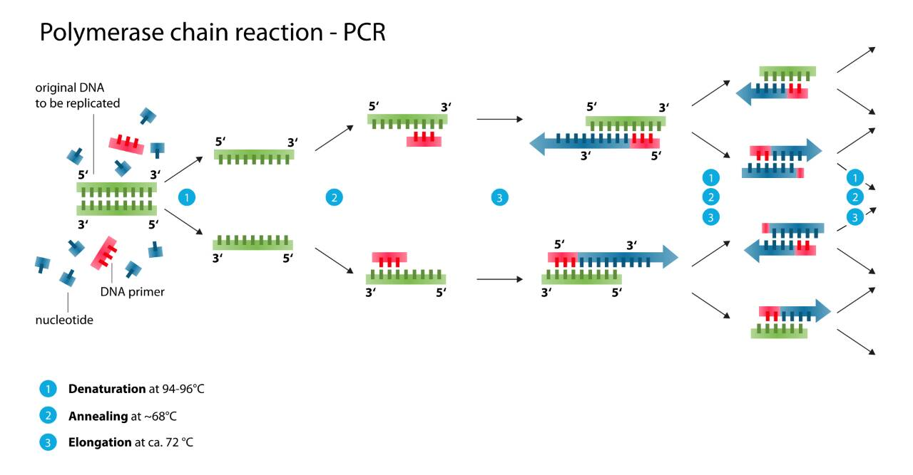
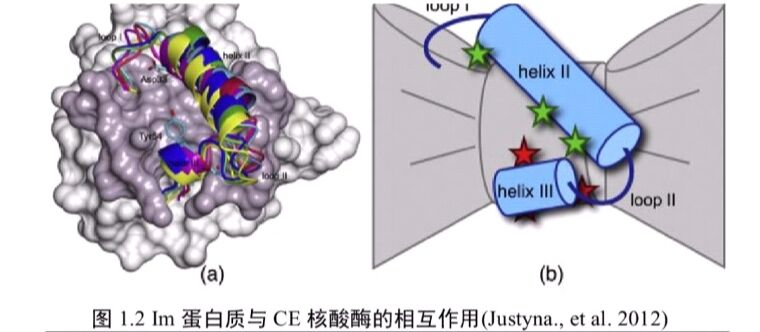
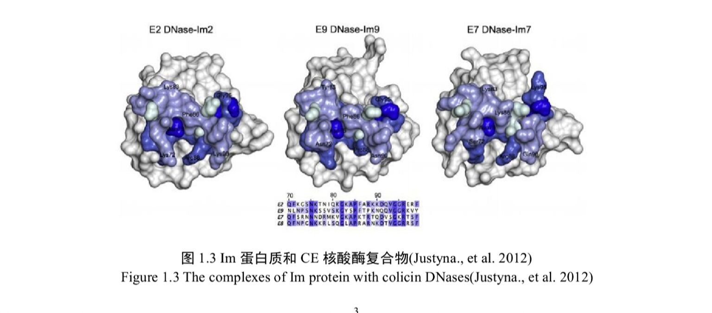

一:TaqDNA聚合酶的改造
Taq DNA聚合酶是第一个被发现的热稳定DNA聚合酶，而在后期进行不断的实验研究，使得TaqDNA聚合酶的性能不断提高。
在1993年，Frances等人研究发现，将TaqDNA聚合酶的5'→3'核酸外切酶活性的结构域切除，得到了蛋白大小为61kDa的stofell片段，发现得到的StofellTaqDNA聚合酶的耐热性明显得到了改善。将stofellTaqDNA聚合酶的半衰期提高到原来的三倍，同时热稳定性得到大幅度提高。
且在1992年，美国华盛顿大学医学院通过缺失突变的方法将TaqDNA聚合酶N端的5'→3'端核酸外切酶结构域删除得到的Klen TaqDNA聚合酶，使得聚合酶的错配率降低了两倍。2004年在Nucleic Acid Research上发表了一种新的方法：将一个耐热的非特异性的双链DNA结合蛋白Sso7d融合在DNA聚合酶上可以加强聚合酶与DNA的结合作用，提高酶的持续合成能力，和保真度。
2003年美国华盛顿大学病理学院的研究人员提出在TaqDNA聚合酶拇指区域结构域上融合T3DNA聚合酶的硫氧还蛋白结构域，研究证实了在硫氧还蛋白质存在的情况下，TaqDNApol/TBD重组酶的进行性比普通的TaqDNA聚合酶增加20-50倍，同时碱基突变率也降低了两倍。
2008年，韩国成均馆大学基因工程系的研究人员发现将Taq和NeqDNA聚合酶按照10:1比例混合在一起可以有效的促进长链DNA的PCR扩增，同时在dUTP存在下，PCR可以有效的提高两到三倍。2009年，美国DNA聚合酶中心实验室通过定点突变的方法对TaqDNA聚合酶进行改造，使其能在一定程度上克服血液样品的抑制作用，突变后的TaqDNA聚合酶对血液的PCR抑制剂的耐受性增强，可以从血液样品中扩增出单拷贝的人基因上的基因组序列。
二:PCR技术
在20世纪80年代初期，耐热的Taq DNA聚合酶，首次被引入聚合酶链式反应( Polymerase Chain Reaction，简称PCR)技术中，该技术突破了聚合酶高温失活的瓶颈，成功实现了DNA分子体外快速扩增，使PCR技术得到了飞速发展。PCR技术具有特异性强、灵敏度高，同时还有操作简单、快速、高效等优点，自1980年以来已经广泛应用于生命科学和医学领域，包括临床检验、司法鉴定和基础分子生物学研究等
PCR反应包括变性、退火、延伸三个步骤，按照碱基互补配对原则，利用DNA聚合酶在引物的引导下以靶序列为模板延伸出一条新链甲。耐热性DNA聚合酶的出现标志着PCR技术真正走向成熟，此后PCR技术得到了广泛的推广，近十几年，被广泛作用于产前诊断，病毒携带检测，基因分型，体外诊断，诱点突变，DNA测序以及DNA多态性研究，医学，生物学各个方面研究。随着对科学研究的不断深入，野生型的TaqDNA聚合酶在某些领域已经无法满足人们对于研究的需求，通过修饰和定向改造来获得更加优良的TaqDNA聚合酶将会是生物学领域的有一项革新。
三:CE7的突变
CL7 蛋白质是大肠杆菌来源的具有结合 DNA 能力的核酸酶，结构域的突变体。
在大肠杆菌自身免疫系统中,当外源DNA病毒攻击大肠杆菌细胞时,CE7核酸酶(Colicin E7 DNase)有利于消灭外源DNA。大肠杆菌外膜中的蛋白质与内膜蛋白质接触,在大肠杆菌内源的核酸内切酶与受体和转运蛋白质结合后,易位至易感细菌的细胞质中,通过细菌基因组的随机降解引发细胞死亡。在大肠杆菌自身免疫系统中,1m7(Immunity protein蛋白质与CE7核酸酶的IPE位点紧密结合抑制核酸内切酶活性,防止免疫系统攻击自身内源ACE核酸酶包括CE,CE7,cs和ce.含h-n-类型的结构域,核酸酶蛋白质大小为15kDam2能够抑制CE2 DNase活性,CE2-m复合物是大肠杆菌素 DNase--m蛋白质复合物,CE2 DNase具有混合的aB折叠,类似于CE7和CE9的未 DNase结合结构域,在结合1m蛋白质时会发生微小的结构变化,结合的1m2蛋白质含有四个a螺旋,具有特征性短螺旋,并且非常类似于游离m2的溶液结构6×his标签纯化1m2蛋白质有利于结晶并稳定晶体结构。
研究大肠杆菌 CE DNase与m免疫蛋白质的相互作用,图1.2(a)展示与大肠杆菌素 DNase结合的1m蛋白质的螺旋异构体分布,证明了m蛋白质与大肠杆菌 DNase结合时可采用的不同螺旋异构状态图1.2(b)模拟大肠杆菌 CE DNasePE和1m蛋白质的主要作用方式E 22 DNase由2掩埋的螺旋Ⅱ和Ⅲ的重叠包括相邻的环1和Ⅱ,已经测定了六种m蛋白质结合复合物的结构1m蛋白质和CE核酸酶复合物如图1.3所示,在1m蛋白质与CE核酸酶的复合物中部分重叠在 CE DNase中,CE9和C7的PE的表面展示显示被其各自的同源m蛋白质掩埋并根据序列保守着色的区域复合物结构下方显示了四种 CE DNase的IPE连续30个残基序列比对, 其颜色对应构象中的颜色。
美国阿拉巴马大学的科学家基于细菌的免疫系统,研发出了一种新的蛋白质纯化技术。科学家们通过定点突变的方法对CE7蛋白质进行了改造,使得CE7蛋白质丧失了核酸酶活性,只保留结合dna的能力,得到突变体蛋白质CL7,其中CL7蛋白质与1m7蛋白质是目前已知的亲和力最强(Kd-10-10-M)的一对蛋白质。研究人员将1m7蛋白质被固定在琼脂糖珠子上,然后让融合CL7标签的目标蛋白质通过1m7纯化柱,利用Im7和C7极高的亲和力就可以高效吸附目标蛋白质,并保证极高的蛋白质纯度该纯化方法不仅操作简单,而且纯化效率高，蛋白质纯度好。同时，它还能协助治疗性蛋白质的大规模生产。另外，这种技术能够同时应用于真核蛋白质和原核蛋白质的纯化。